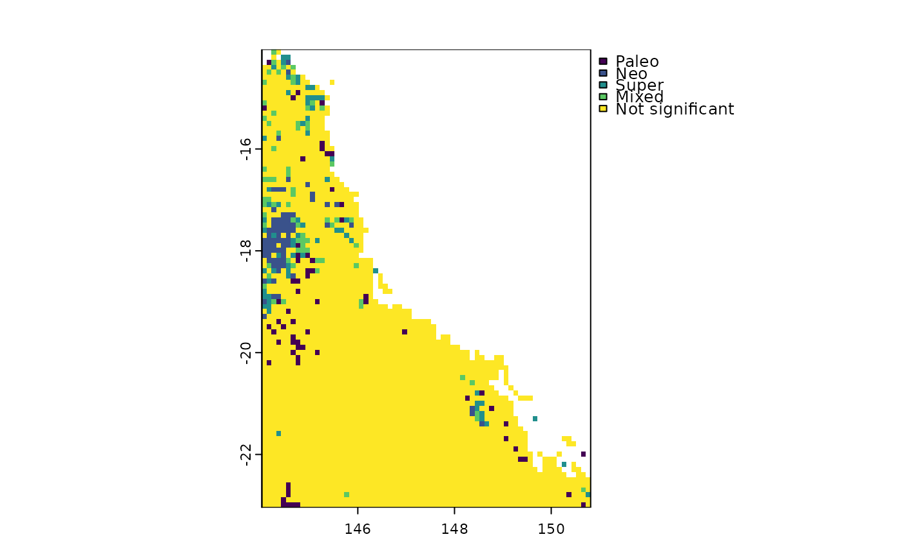

Use the results of rast.pe.ses() to identify centers of paleo-, neo-, super-, and mixed- endemism following the CANAPE scheme of Mishler et al., 2014.
Usage
canape.rast(
pe.obs.p.upper,
pe.alt.obs.p.upper,
rpe.obs.p.upper,
rpe.obs.p.lower,
filename = NULL,
overwrite = FALSE
)Arguments
- pe.obs.p.upper
SpatRaster. Upper p-value comparing the observed phylogenetic endemism and the randomized phylogenetic endemism values
- pe.alt.obs.p.upper
SpatRaster. Upper p-value comparing the alternate phylogenetic endemism and the randomized alternate phylogenetic endemism
- rpe.obs.p.upper
SpatRaster. Upper p-value comparing the relative phylogenetic endemism and the randomized relative phylogenetic endemism
- rpe.obs.p.lower
SpatRaster. Lower p-value comparing the relative phylogenetic endemism and the randomized relative phylogenetic endemism
- filename
character. Output filename
- overwrite
logical. If TRUE, filename is overwritten
Examples
# \donttest{
library(SESraster)
#> This is SESraster 0.7.1
#> If you use SESraster, please cite in your publications. See:
#> citation("SESraster")
library(terra)
#> terra 1.8.29
library(phyloraster)
x <- rast(system.file("extdata", "rast.presab.tif", package="phyloraster"))
tree <- ape::read.tree(system.file("extdata", "tree.nex",
package="phyloraster"))
data <- phylo.pres(x, tree)
ses <- rast.pe.ses(x = data$x, data$tree,
aleats = 5, metric = "all")
#> Please cite SESraster when using spatial null models.
#> See: citation(SESraster)
# CANAPE
canape <- canape.rast(ses$p.upper.PE, ses$p.upper.PE.alt,
ses$p.upper.RPE, ses$p.lower.RPE)
unique(canape)
#> cover
#> 1 Paleo
#> 2 Neo
#> 3 Super
#> 4 Mixed
#> 5 Not significant
plot(canape)

# }